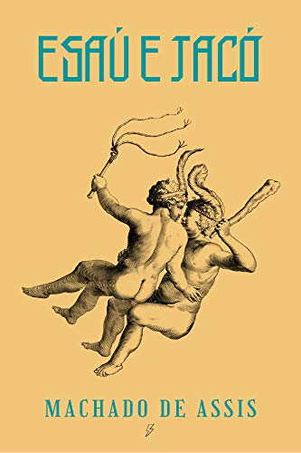
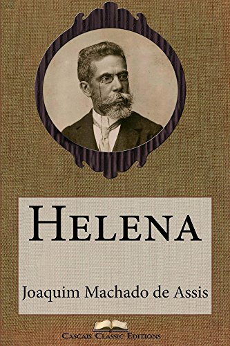
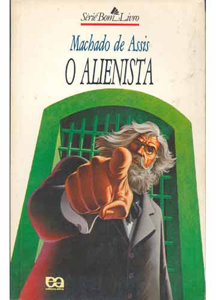

"Esaú e Jacó" é um romance que narra a história de dois irmãos gêmeos, Pedro e Paulo, nascidos em uma família tradicional do Rio de Janeiro durante o final do período imperial e início da República. Os irmãos representam ideais políticos opostos, refletindo os tumultos e transformações sociais do Brasil da época.
Pedro é conservador e monarquista, enquanto Paulo é liberal e republicano. Eles são constantemente envolvidos em disputas políticas e familiares, especialmente após a morte de seu pai, o Senador Aguiar, que deixa uma herança considerável. Além disso, os irmãos disputam o amor de Flora, uma jovem que se torna pivô de suas rivalidades.
O enredo explora temas como política, família, amor e identidade nacional, utilizando a rivalidade entre os irmãos como uma metáfora para os conflitos ideológicos e sociais do Brasil da época. Machado de Assis utiliza sua prosa afiada e irônica para criar uma narrativa envolvente, cheia de reviravoltas e reflexões sobre a condição humana e a sociedade brasileira. O livro oferece uma visão perspicaz e crítica da história e da política do Brasil no período de transição do Império para a República.

"Helena" é um romance que conta a história de Helena, uma órfã criada por uma família de baixa renda no Rio de Janeiro. Apesar de sua origem humilde, Helena é bela, inteligente e virtuosa.
A trama se desenrola quando o velho Conselheiro Vale, um homem rico e influente, descobre que Helena é sua filha ilegítima, fruto de um relacionamento com uma mulher pobre. Decidido a reconhecê-la e proporcionar-lhe uma vida melhor, o Conselheiro Vale a acolhe em sua casa e a trata como uma verdadeira dama.
Helena é então introduzida na alta sociedade carioca, onde atrai a atenção de homens ricos e influentes, incluindo o jovem Estácio, que se apaixona por ela. No entanto, Helena se vê dividida entre sua lealdade ao Conselheiro Vale, que a criou, e seu desejo de seguir seu próprio coração.
O romance aborda temas como amor, identidade, classe social e moralidade, enquanto retrata a jornada de autodescoberta e amadurecimento de Helena em meio às complexidades da sociedade brasileira do século XIX. Com sua prosa elegante e sua habilidade em criar personagens multifacetados, Machado de Assis oferece uma reflexão perspicaz sobre as questões humanas universais.

"O Alienista" é um conto do escritor brasileiro Machado de Assis, publicado originalmente em 1882. A história se passa na cidade fictícia de Itaguaí, no Brasil, e gira em torno do Dr. Simão Bacamarte, um médico respeitado que decide construir um hospício na cidade.
O Dr. Bacamarte, movido pelo desejo de estudar a mente humana, começa a internar pessoas em seu hospício com base em critérios cada vez mais amplos e vagos. À medida que sua obsessão plela ciência da psiquiatria aumenta, ele passa a ver sinais de loucura em quase todos os habitantes da cidade, incluindo os próprios membros da elite local.
A medida que mais pessoas são internadas, a cidade é tomada por um clima de paranoia e revolta. Os cidadãos começam a questionar a autoridade do Dr. Bacamarte e o propósito de seu hospício, levando a um confronto entre a razão científica e o senso comum.
"O Alienista" é uma sátira mordaz sobre a busca pelo conhecimento científico, os limites do poder institucional e a natureza da loucura. Machado de Assis utiliza a história para questionar as noções de sanidade e insanidade, enquanto faz uma crítica irônica à sociedade e às instituições de seu tempo. O conto continua a ser uma das obras mais famosas e estudadas do autor, conhecido por sua habilidade em explorar os aspectos mais complexos da condição humana.